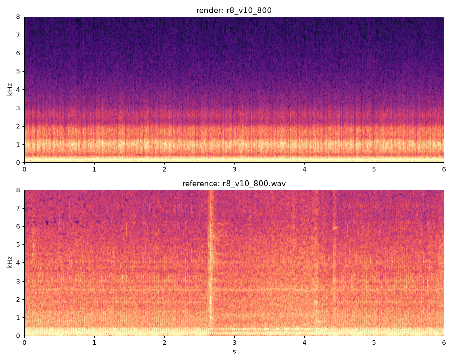
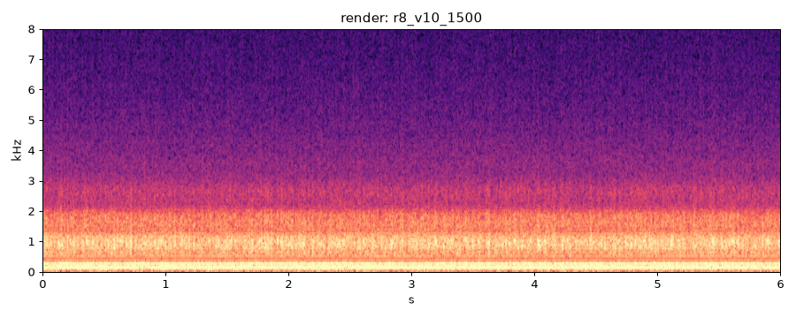
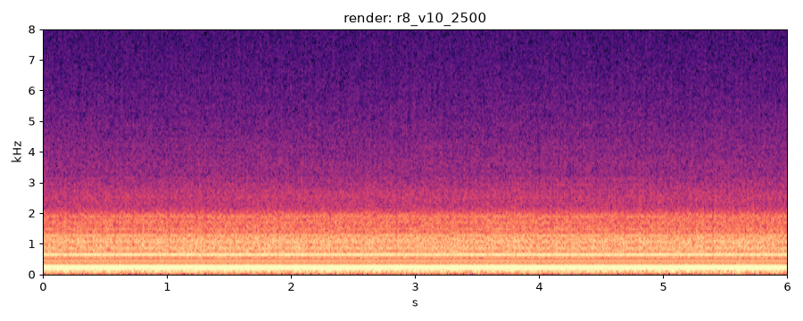
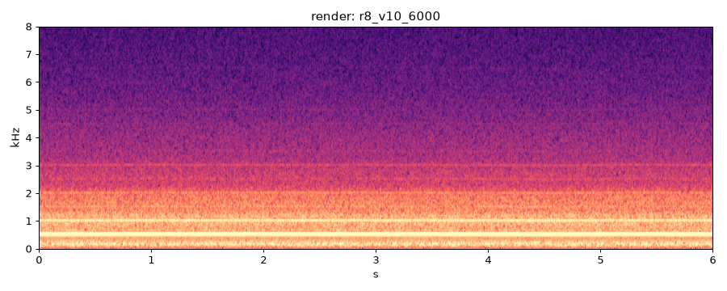
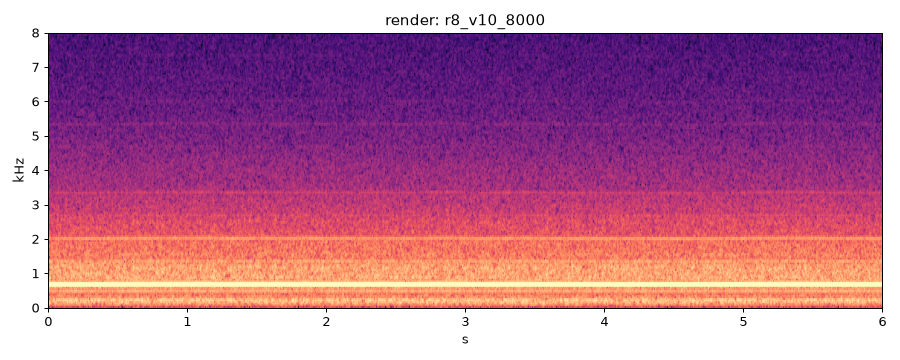
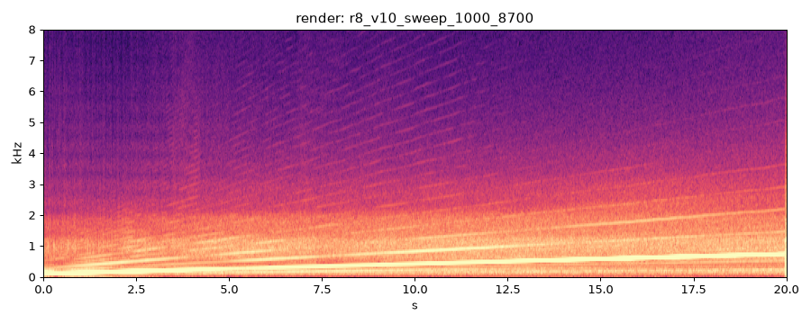

| check | value |
|---|---|
| deterministic | PASS |
| nan_free | PASS |
| below_full_scale | PASS |
| rtf_60s | 3.83 |
| rtf_ok | FAIL |
| firing_freq_ok | PASS |
| presence_ok | PASS |
current best
previous best
reference
| metric | value | vs prev |
|---|---|---|
| multi-scale STFT dist | 2.4917 | +0.592 |
| firing freq error % | 0.022 | -0.012 |
| half-order level dB | -12.8 | |
| harmonic RMS err dB | 7.62 | +1.929 |
| mel L1 | 4.2878 | +0.892 |
| MFCC cosine | 0.0588 | +0.014 |
| pulse env L2 | 0.3470 | -0.020 |
| HNR dB | 14.7 | |
| band balance L1 | 0.518 | +0.161 |
| cycle contrast | 1.77 | |
| crest dB | 11.2 | |
| centroid Hz | 502 | |
| flatness | 0.0000 | |
| max_abs | 0.525 | |
| rtf | 3.520 | |
| peak_cyl_pressure_bar | 13.850 |

current best
previous best
| metric | value | vs prev |
|---|---|---|
| firing freq error % | 0.039 | -0.000 |
| half-order level dB | -11.2 | |
| HNR dB | 13.5 | |
| cycle contrast | 1.33 | |
| crest dB | 11.5 | |
| centroid Hz | 571 | |
| flatness | 0.0000 | |
| max_abs | 0.440 | |
| rtf | 3.420 | |
| peak_cyl_pressure_bar | 29.550 |

current best
previous best
| metric | value | vs prev |
|---|---|---|
| firing freq error % | 0.034 | -0.001 |
| half-order level dB | -11.4 | |
| HNR dB | 22.6 | |
| cycle contrast | 1.15 | |
| crest dB | 6.2 | |
| centroid Hz | 466 | |
| flatness | 0.0000 | |
| max_abs | 0.701 | |
| rtf | 3.350 | |
| peak_cyl_pressure_bar | 43.180 |

current best
previous best
| metric | value | vs prev |
|---|---|---|
| firing freq error % | 0.033 | -0.001 |
| half-order level dB | -7.8 | |
| HNR dB | 16.5 | |
| cycle contrast | 1.20 | |
| crest dB | 10.4 | |
| centroid Hz | 593 | |
| flatness | 0.0000 | |
| max_abs | 0.463 | |
| rtf | 3.380 | |
| peak_cyl_pressure_bar | 68.340 |
current best
previous best
| metric | value | vs prev |
|---|---|---|
| firing freq error % | 0.035 | +0.001 |
| half-order level dB | -6.3 | |
| HNR dB | 20.3 | |
| cycle contrast | 1.13 | |
| crest dB | 6.9 | |
| centroid Hz | 743 | |
| flatness | 0.0000 | |
| max_abs | 0.660 | |
| rtf | 3.430 | |
| peak_cyl_pressure_bar | 100.880 |

current best
previous best
| metric | value | vs prev |
|---|---|---|
| firing freq error % | 0.028 | -0.006 |
| half-order level dB | -5.4 | |
| HNR dB | 21.9 | |
| cycle contrast | 1.11 | |
| crest dB | 5.3 | |
| centroid Hz | 870 | |
| flatness | 0.0000 | |
| max_abs | 0.777 | |
| rtf | 3.490 | |
| peak_cyl_pressure_bar | 107.080 |

| metric | value | vs prev |
|---|---|---|
| HNR dB | 20.7 | |
| crest dB | 7.8 | |
| centroid Hz | 694 | |
| flatness | 0.0000 | |
| max_abs | 0.998 | |
| rtf | 3.900 | |
| peak_cyl_pressure_bar | 116.310 |
